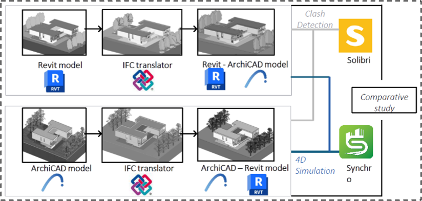
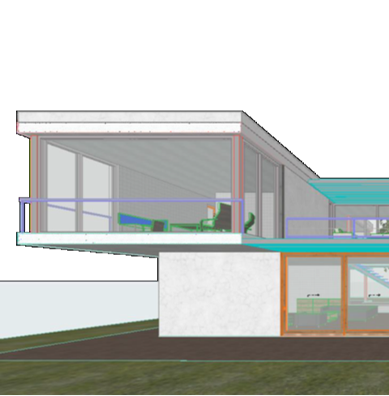
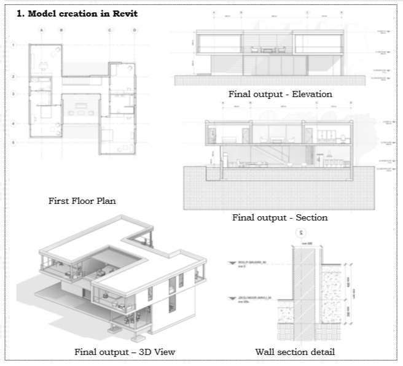
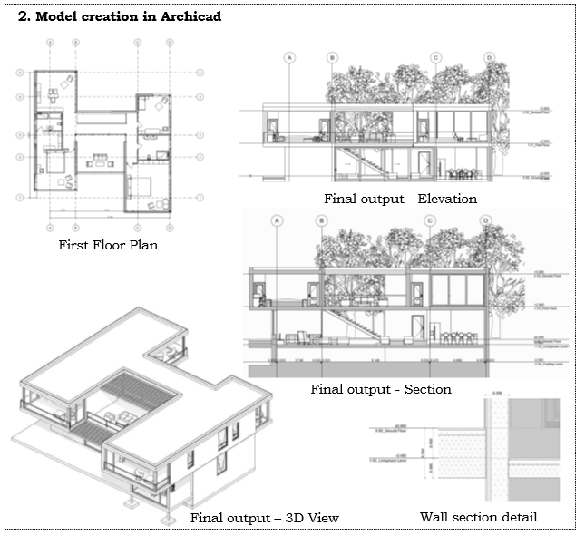

Building Information Modelling and Digital Transformation (Academic Project)
Academic projects
Computational optimisation for the MX3D stainless-steel bridge. Focus on printability simulations, path planning and structural performance.
Robotic 3D metal printing, WAAM, path planning, optimization
1. VIRTUAL REALITY (3DS MAX, Gravity Sketch and Unity)
Turkish-Themed Pavilion Design: Design of a 40m2 pavilion space, connected to a gallery using 3ds Max and Gravity Sketch, exploring Turkish cultural elements. Developing a Unity-powered VR and computer navigation system for immersive virtual exploration of the 3D model.
Pavilion
Tools and shapes exploration in Unity
Complete model in Gravity sketch
Pavilion rendered model in unity
Gallery
Tools exploration
Complete model in 3DS MAX
Gallery rendered model in unity
2. DIGITAL CONSTRUCTION
Unleashing the Power of IoT: The Transformative Force in BIM and Digital Construction
The blog Unleashing the Power of IoT: The Transformative Force in BIM and Digital Construction explores the integration of the Internet of Things (IoT) with Building Information Modelling (BIM) to revolutionize construction management. It highlights how IoT-enabled BIM creates digital twins, facilitates real-time monitoring, predictive maintenance, and automates processes to overcome traditional construction inefficiencies like poor communication and reactive maintenance. The blog discusses the benefits of IoT-BIM, including enhanced site safety, environmental monitoring, logistics optimization, and streamlined modular construction. Real-world case studies, such as The Edge in Amsterdam and Shanghai Tower, demonstrate successful implementations of these technologies. While addressing challenges like data security and interoperability, it emphasizes the potential of future advancements, including AI and augmented reality, to further enhance IoT-BIM applications.
3. COMPUTATIONAL DESIGN
Computational optimization and analysis for M3XD Bridge - A case study approach of Robotic 3D printing metal method
Abstract Due to technological advancements in construction Industry, new possibilities have unlocked through robotic automation and technology. On site robotic automation of metal structures have been innovated by applying new methods of computation design optimization, Additive manufacturing (AM) is one computation method carried out by using Wire and Arc manufacturing in design and construction of MX3D Bridge. Wire Arc Additive manufacturing (WAAM) enables complex geometry while improving structural performance and material efficiency. This paper focuses on the computational analysis performed for the MX3D Bridge project, a 30-foot stainless steel pedestrian bridge built entirely by a specialized 3D metal printing robot in Amsterdam. To improve printability simulations, material usage minimization, robotic path planning and structural soundness additional computation designing methods are used in the case. Further, The MX3D Bridge project goals and constraints are discussed in detail. The integrated computational engineering workflow allowed for the development of a lightweight yet strong 3D printed Stainless Steel Bridge. This case study's findings offer valuable insights into design, optimization, and construction techniques for large-scale additive manufacturing in infrastructure. The findings contribute to the advancement of digitally-driven robotic metal printing for the built environment. Keywords: Robotic 3D printing, Computational method, Additive Manufacturing, Wire Arc Additive Manufacturing, MX3D.
4. BIM Integrated project (Revit, Archicad, Solibri, and Synchro)
The study aims to examine the interoperability between Revit and Archicad by modelling two models in different software and highlighting its potentials and limitations, while checking the model in Solibri and initiating 4D simulation in Synchro as part of the quality assurance process.
The project involves creating 3D models in Revit and Archicad, comparing the models, checking for clashes, and simulating 4D construction sequencing. The comparison examines differences in general information, editability, geometry, and characteristics between the Revit and Archicad models. Interoperability between the software platforms and Solibri is also evaluated.
1. Model creation in Revit
2. Model creation in ArchiCAD
3. IFC Transfer
IFC Transfer - Revit model - BIM Collab model - Revit model in Archicad
IFC Transfer - Archicad model - BIM Collab model - Archicad model in Revit

4. Solibri - Clash detection
Customized role and rule set
Check model
Clash and its severity identified
5. Synchro - 4D Simulation
Synchro Interface
Animation
3D Filters for creating tasks